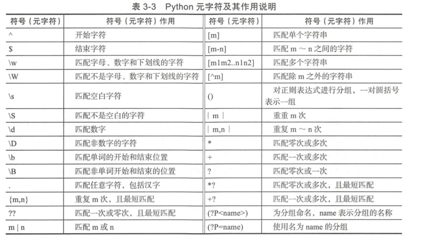
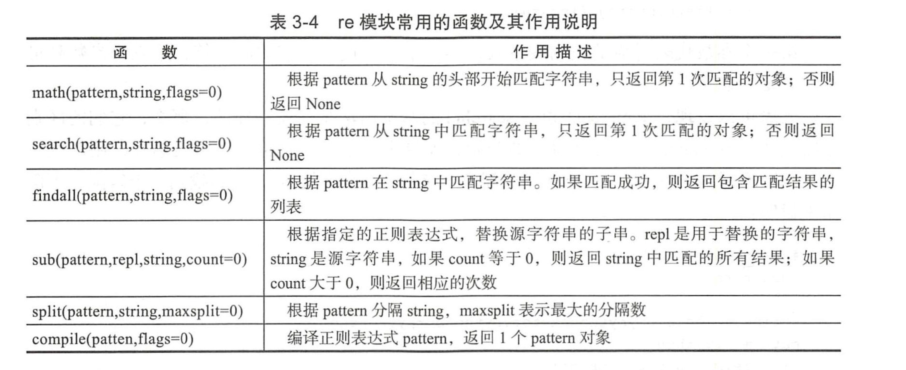
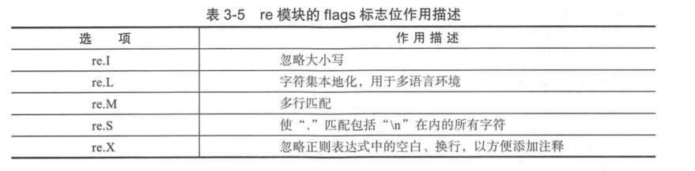
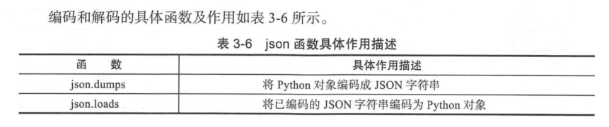
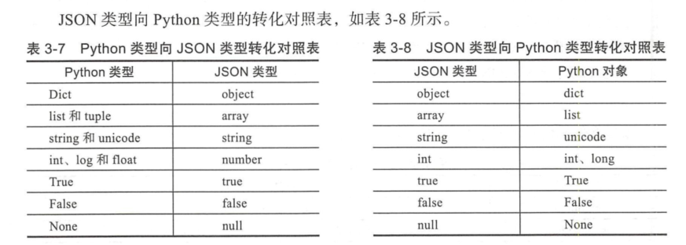
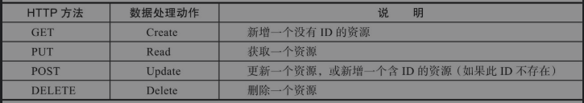

Contents
3. 03.Python在Devops与自动化运维中的应用¶
[TOC]
3.1. 3.1 Python基础知识进阶¶
3.1.1. 3.1.1 正则表达式应用¶
正则表达式中有许多特殊的字符（也称元字符），这些特殊字符是构成正则表达式的要素。
Python元字符及其作用说明

(1)原子 原子是正则表达式中最基本的组成单位，每个正则表达式中至少要包含一个原子，常见的原子是由普通字符或通用字符和原子表构成的。
原子表示由一组地位平等的原子组成，匹配的时候会获取该原子表中的任意一个原子来进行匹配。 在Python中，原子表由“[]”表示，“[xyz]”就是一个原子表，这个原子表中定义了3个原子，这3个原子的地位是平等的。
如果我们要对正则表达式进行嵌套，就需要使用分组“()”，即我们可以使用“ ()”将一些原子组合成一个大原子使用， 小括号括起来的那部分会被当做一个整体来使用。
- 贪婪模式与懒惰模式
#!/usr/bin/env python
# -*- coding:utf8 -*-
# auther; 18793
# Date：2019/5/21 17:31
# filename: 贪婪匹配和懒惰匹配.py
import re
# 使用贪婪匹配
m = re.search(r'\d{5,8}', '87654321')
print(m) #<_sre.SRE_Match object; span=(0, 8), match='87654321'>
print(m.group()) #87654321
# 使用惰性匹配
m = re.search(r'\d{5,8}?', '87654321') #<_sre.SRE_Match object; span=(0, 5), match='87654'>
print(m)
print(m.group()) #87654
对3位数字重复3次，可以使用下面的正则表达式。命令如下：
{\d\d\d}{2}
\d\d\d{2}这个表达式相当于"\d\d\d\d",匹配的结果为"1234"和"5678"
使用re模块处理正则表达式

re模块中的很多函数中都有一个flags标志位，该参数用于设置匹配的附加选项。例如，是否忽略大小写、是否支持多行匹配。

3.1.2. 3.1.2 使用Python解析JSON¶

使用dumps()编码举例：
#!/usr/bin/env python
# -*- coding:utf8 -*-
# auther; 18793
# Date：2020/1/19 10:26
# filename: json_sample0.py
import json
data = [{'a': 1, 'b': 2, 'c': 3, 'd': 4, 'e': 5}]
j = json.dumps(data, indent=4)
print(j)
'''
[
{
"d": 4,
"a": 1,
"b": 2,
"c": 3,
"e": 5
}
]
'''
使用loads()解码举例：
#!/usr/bin/env python
# -*- coding:utf8 -*-
# auther; 18793
# Date：2020/1/19 10:30
# filename: json_sample1.py
import json
data = '{"a":1,"b":2,"c":3,"d":4,"e":5}'
text = json.loads(data)
print(text)
'''
{'e': 5, 'b': 2, 'd': 4, 'c': 3, 'a': 1}
'''

3.1.3. 3.1.3 Python多进程¶
#!/usr/bin/env python
# -*- coding:utf8 -*-
# auther; 18793
# Date：2020/1/20 15:12
# filename: 多个子进程.py
import multiprocessing
import time
def func(msg):
print(multiprocessing.current_process().name + "-" + msg)
if __name__ == '__main__':
pool = multiprocessing.Pool(processes=4)
for i in range(100):
msg = "hello %d" % (i)
pool.apply_async(func, (msg,))
pool.close() # 关闭进程池表示不能再往进程池中添加进程
pool.join() # 等待进程池中所有的进程执行完毕，必须在close()之后调用
print("Sub-process(es) done.")
3.2. 3.2 Python常用的三方库¶
| 三方库名 | 简介 |
|---|---|
| django | Python最留下的Web框架 |
| tornado | 一个web框架和异步网络库 |
| flask | 一个Python的微型框架 |
| cherryPy | 一个极简单的Python web框架，具有WSGI线程池 |
| requests | 基于urllib，网络请求库 |
| yagmail | 封装了smtplib，几行代码技能发送邮件 |
| pstuil | 用于系统监控和分析。 |
| sh | 方便调用Linux Shell，比subprocess标准库更方便 |
| Boto3 | 可以使用Boto3来使用AWS.快速调用AWS的各种服务 |
| Srapy | Python中鼎鼎有名的爬虫框架 |
| BeautifulSoup | 解析HTML利器，显示最新版本为BS4。 |
| Selenium | 模拟浏览器进行自动化测试 |
| Jinja2 | Jinja2是基于Python的模板引擎 |
| rq | 简单的轻量级Python的任务队列 |
| Celery | 一个分布式异步任务队列/作业队列，基于分布式消息传递 |
| Supervisor | 进程管理工具 |
3.3. 3.3 利用Flask设计后端Restful API¶
Flask是轻量级、易于采用、文档化和流行的开发RESTful API的非常好的选择，也是笔者在工作中最常用的Flask Web框架之一。从根本上说，Flask是建立在可扩展性和简单性的基础之上的。Flask应用程序以轻量级而闻名，主要是与Django对比。Flask开发者称之为微框架，其中“微”（如这里所述）意味着目标是保持核心简单但可扩展。Flask不会为我们做出许多决定，比如要使用什么数据库或什么模板引擎来选择。最后，Flask还有广泛的文档来为开发人员提供支持。
在DevOps中使用RESTful API的原因如下：
❑ 返回的不是HTML，而是机器能直接解析的数据。随着Ajax的流行，API返回数据，而不是HTML页面，数据交互量减少，用户体验会更好。前后台分离，后台更多地进行数据处理，前台对数据进行渲染。
❑ 直接使用API可以进行CRUD，增删改查，结构清晰。一个标准的API有4个接口：GET、PUT、POST、DELETE，对应我们的请求类型，就是Web获取页面、上传表单（或文件）、更新资源或删除资源。
❑ 使用Token来进行用户权限认证，比Cookie更安全。相对而言，Tocken认证比Cookie认证更为安全，毕竟Cookie认证是我们爬网站时使用最多的伪造渠道。
❑ 越来越多的开放平台，开始使用API接口。
HTTP方法与CURD数据处理的对应关系
